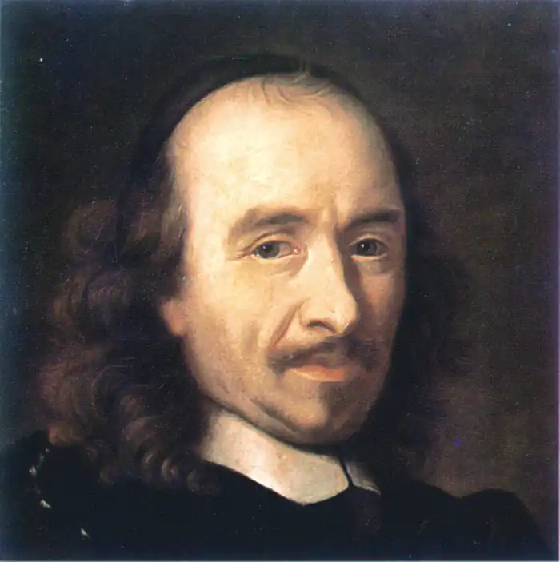
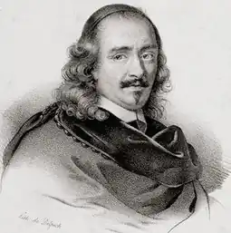

КОРНЕЛЬ, П'єр (Corneille, Pierre — 06.06.1606, Руан — 01.10.1684, Париж) — французький драматург.Народився в сім'ї провінційного адвоката, здобув освіту в єзуїтській школі. Перші твори — галантні вірші в дусі модної тоді преціозності (вишукано-штучний стиль життя аристократичних салонів Франції). Рання творчість Корнеля не вирізнялася глибиною, оскільки була зорієнтована на смаки відвідувачів паризьких салонів, куди прагнув потрапити молодий автор. Його помітив кардинал Рішельє і включив до числа п'яти наближених до нього драматургів, через котрих перший міністр Франції хотів провадити свою політику в царині театру. Але Корнель невдовзі вийшов з гуртка драматургів. У 1636 р. Корнель написав трагікомедію "Сід" ("Cid"), яка стала першим визначним твором класицизму. "Сід" був поставлений на сцені театру "Маре" (тобто "Болото" — театр отримав назву від околичного кварталу Парижа, де мешкали злидарі та злодії). На виставу "Сід" сюди з'їжджалася уся паризька знать. Зберігся опис цих вистав, залишений директором театру Маре: "На лавках лож сиділи такі пани, яких зазвичай бачили не інакше, як у палацових залах на стільцях із квітів. Натовп у нас був такий великий, що закапелки театру, які зазвичай слугували місцями для лакеїв, були безплатними місцями для панів з блакитними стрічками, а сцена вся була загороджена ногами знатних кавалерів". Найвельможніші глядачі сиділи просто на сцені. У таких умовах неможливо часто змінювати декорації, на сцені майже нічого не було, й крісла виносили тільки для акторів, які зображали королів. Театральних приміщень зазвичай не будували спеціально, а переробляли із залів для гри в м'яч — довгих і вузьких. Зал освітлювали свічками, тому в театрі панували сутінки, і актор, якщо він хотів, аби його добре бачили глядачі, мусив увесь час перебувати на авансцені та стояти (інакше його погано розрізнятимуть серед глядачів, які сидять на сцені). Це одна з причин, що пояснює, чому в творах Корнеля, зокрема в "Сіді", так мало дії і так багато слів. Але якщо немає дії, то якими ж прекрасними мусять бути слова, щоби захопити глядача! І от "Сід" став першим твором для сцени, в якому глядачі були вражені красою, величністю, гнучкістю вірша. Невдовзі Парижем поширилось нове прислів'я: "Це так само прекрасно, як "Сід"!"
"Сід" у перекладі з арабської означає "пан". Це прізвисько знаменитого іспанського полководця XI ст. Родріґо Діаса, про якого йдеться у "Пісні про мого Сіда", поемі "Родріґо" та численних середньовічних іспанських романсах. Близько 1618 р. в Іспанії з'явилася драматична дилогія про молоді літа цього героя — "Юність Сіда". її автором був відомий драматург, суперник Л. де Веґа, автор понад 400 п'єс Г. де Кастро. "Юність Сіда" — основне джерело "Сіда" Корнеля. Сюжет перероблявся відповідно до класицистичної настанови: він був значно спрощений, усунені персонажі, які не беруть участі в головній дії (приміром, брати Родріґо). Дві п'єси, що входили до дилогії, перетворилися в одну. Події були гранично сконцентровані.
На цьому матеріалі Корнель розкриває новий конфлікт — боротьбу між обов'язком та почуттям — через систему більш конкретних конфліктів. Перший із них — конфлікт між особистими прагненнями і почуттями героїв і обов'язком перед феодальною сім'єю чи родинним обов'язком. Другий — конфлікт між почуттями героя й обов'язком перед державою, перед своїм королем. Третій — конфлікт родинного обов'язку й обов'язку перед державою. Ці конфлікти розкриваються у певній послідовності: спочатку через образи Родріґо та його коханої Хімени — перший, потім через образ інфанти (доньки короля), котра приборкує своє кохання до Родріґо в ім'я державних інтересів, — другий і, зрештою, через образ короля Іспанії Фернандо — третій. На основі розкриття системи конфліктів будується сюжет. Юний Родріґо та Хімена кохають одне одного. Але поміж їхніми сім'ями спалахує сварка. Батько Хімени — дон Гомес і батько Родріґо — дон Дієґо посперечалися про те, хто з них має більше прав стати вихователем спадкоємця престолу. У розпалі сварки дон Гомес дає донові Дієґо потиличника. Це страшна образа, яку іспанські феодали могли змити тільки кров'ю. Але дон Дієго — старий, він не зможе перемогти в поєдинку молодшого та сильнішого дона Гомеса. І дон ДІЄҐО просить відімстити за себе свого сина Родріґо. Так виникає конфлікт між почуттями та феодальним обов'язком в душі Родріґо. Він кохає Хімену, але мусить відімстити її батькові за образу свого батька. Щоб особливо підкреслити цю суперечність, Корнель приймає сміливе художнє рішення: він вводить монолог Родріґо (зазвичай, герої розкривають свої думки не в монологах наодинці, а в розмові з персонажами-"повірниками"; є декілька таких персонажів-"слухачів" і в "Сіді"). Монолог виділяється ще й тим, що написаний не александрійським віршем, а у формі стансів зі складною побудовою та римуванням строф. Станси Сіда — видатний поетичний твір. І до сьогодні кожен француз ще в школі вчить їх напам'ять. Корнель розкрив у них не лише сам конфлікт, а й його вирішення: необхідно завжди ставити обов'язок вище за почуття. Стансами Сіда закінчується перша дія. Сід убиває дона Гомеса на дуелі. Ця подія не показується. (Зображати на сцені смерть вважалося непристойним. Згадаймо також про умови вистави). Про неї розповідають, як і про більшість інших подій. Таким чином, у трагедії значне місце посідає епічний елемент. Тепер Хімена опиняється в тій самій ситуації, у якій щойно був Родріґо: вона теж повинна вибрати між почуттям кохання до Родріґо й обов'язком перед родиною, загиблим батьком. Хімена, як і Родріґо, ставить обов'язок вище за почуття. Вона вимагає смерті Родріґо. Необхідна третя сила, що стоїть вище за Родріґо та Хімену, аби розв'язати трагічне протиборство закоханих. Такою силою повинен стати король Кастилії Фернандо. Але перед ним постає особливо складна проблема. Нехтуючи правдоподібністю, Корнель у 30 годин сюжетного часу вмістив події кількох місяців: поки король розмірковує над вимогою Хімени, поки інфанта кастильська донья Уррака зізнається своїй виховательці Леонор у коханні до Родріґо, котрий стоїть нижче за неї з народження, Сід встигає врятувати країну від вторгнення маврів і з перемогою повернутися додому. Тепер король повинен вирішити, чому віддати перевагу: родинному обов'язку — і тоді Родріґо мають стратити, чи державним інтересам — і тоді Родріґо має бути прославлений як рятівник вітчизни. Король не може дати відповіді. Необхідна нова сила, яка стоїть понад королем. І герої вдаються до "Божого суду" — властивого для Середньовіччя способу вирішення суперечок з допомогою сили. Хімена оголошує: той, хто переможе у поєдинку з Родріґо, стане її чоловіком. На боці Хімени виступає кастильський шляхтич дон Санчо, котрий давно і безнадійно кохає її. Родріґо перемагає дона Санчо. Отже, згідно з уявленнями героїв, Бог на боці Родріґо. Король Фернандо радісно оголошує про шлюб Родріґо та Хімени. Послідовна вірність обов'язку дозволила закоханим героям поєднати свої долі. Корнель створює характери інакше, аніж у мистецтві ренесансного реалізму та бароко. їм не властива різнобічність, кричуща конфліктність внутрішнього світу, суперечливість у поведінці. Характери в "Сіді "не індивідуалізовані. Не випадково обрано такий сюжет, в якому одна й та ж проблема постає перед кількома персонажами, при цьому всі вони вирішують її однаково. Для класицизму було властиво під характером розуміти якусь одну рису, яка ніби притлумлює всі інші. У Корнеля в "Сіді", цьому ранньому творі класицизму, характер — це щось ще вужче. Характером наділені ті персонажі, хто може свої особисті почуття підпорядкувати велінню обов'язку. Створюючи такі характери, як Родріґо, Хімена, Фернандо, інфанта, Корнель надає їм величавості, героїзму. До цих двох характерів слід додати й двох батьків — дона Гомеса та дона Дієґо, які у своїй суперечці прагнули відстояти честь власних феодальних родин, тобто керувалися родинним обов'язком. Величність характерів, їх громадянськість в особливий спосіб забарвлюють найособистіше почуття, якого вони зазнають, — почуття кохання. Корнель заперечує ставлення до кохання як до темної, згубної пристрасті чи до галантної, легковажної розваги. Він бореться з преціозним уявленням про кохання, вносячи раціоналізм у цю царину, освітлюючи кохання глибоким гуманізмом. Кохання можливе лише тоді, коли закохані поважають одне в одному шляхетну особистість, тому кохання стає чеснотою поряд з найвищими громадянськими почуттями. Твір Корнеля відразу прийняли глядачі. Але в нього знайшлися і критики, які стверджували, що драматург не знає правил, за якими слід писати трагедію. Дійсно, в "Сіді" чимало відступів від правил: сюжет узятий з легенд середньовічної Іспанії, а не з історії Стародавніх Греції чи Риму. Не дотримано принципу "чистоти жанру": трагічний конфлікт знаходить щасливий розв'язок, що виразилось і в означенні жанру п'єси, даному Корнелю — "трагікомедія". Драматург на кілька годин перевищив "єдність часу". "Єдність місця" він розуміє занадто широко, розгорнувши події "Сіда" у різних палацах, а не в одному. Порушено "єдність дії": образ інфанти не пов'язаний з головною дією. Не дотримана і ще одна єдність — вірша: включення "стансів Сіда" руйнує постійність александрійського вірша, яким слід було писати трагедії. Найсильніший докір критиків полягав у наступному: Хімена в день загибелі батька стає дружиною його вбивці. Отже, героїня страхітливо аморальна, а увесь твір присвячено уславленню гріха. За наполяганням кардинала Рішельє в суперечку втрутилася Французька Академія. До недавнього часу вважалося, що Рішельє був натхненником цькування Корнеля. Лише в 1936 р. французький вчений Л.Батіфоль переконливо довів, що Рішельє високо цінував Корнеля, захоплювався "Сідом". Легенда про неприязнь Рішельє щодо Корнеля виникла після смерті кардинала в колах його противників і протрималася майже триста років. І все-таки не можна не зауважити, що варіант відгуку Академії про "Сіда", який задовольнив Рішельє, попри вельми ввічливу та поштиву форму, повторив головні звинувачення ворогів Корнеля: невдалий вибір сюжету, аморальність Хімени тощо.